3D Printing with Forth
Part I
November 20, 2021
FORTH DAY!
Overview
- Intro to 3D Printing
- G-code and printer control
- Constructive Solid Geometry
- Signed Distance Fields
- Deciding the Path
- Fixing my microwave
Reprap
- Adrian Bowyer, University of Bath 2005
- Open-source 3D Printer that can print itself

https://reprap.org/wiki/RepRap
Prussa i3 (2012, kit 2015)

https://reprap.org/wiki/RepRap
- Rectilinear Printer
- Moving Heated Bed
- Moving Extruder Motor
Kossel (2012)

https://reprap.org/wiki/RepRap
- Delta Printer
- Stationary Glass Bed
- Stationary Motors
My FLSUN Kossel
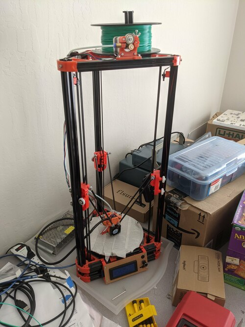
- Kit Version of Kossel
- Added Metal Heated Bed
- ~$200 in 2017
My FLSUN Kossel
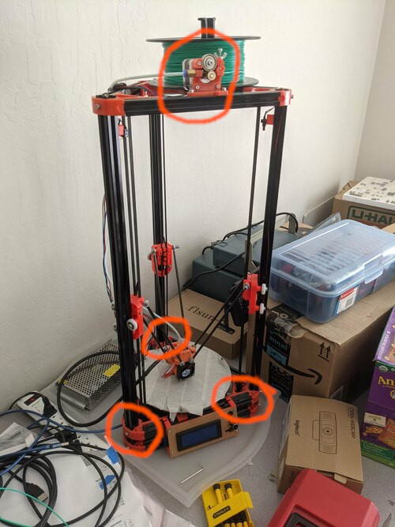
- Kit Version of Kossel
- Added Metal Heated Bed
- ~$200 in 2017
My FLSUN Kossel
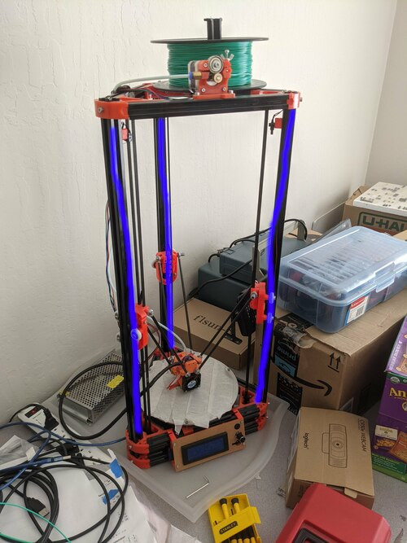
- Kit Version of Kossel
- Added Metal Heated Bed
- ~$200 in 2017
My FLSUN Kossel
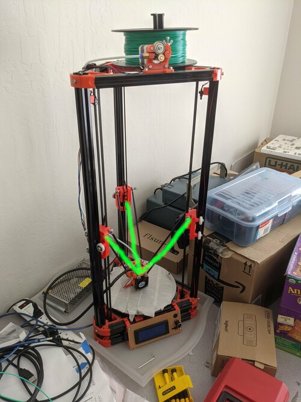
- Kit Version of Kossel
- Added Metal Heated Bed
- ~$200 in 2017
My FLSUN Kossel
- First control board weird
- FLSUN good about replacing
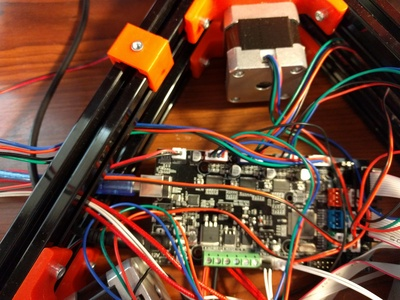
Materials
- PLA - Polylatic Acid
- Polyester made from corn, cassava, sugarcane, or sugar beet pulp.
- Used for recyclable utensils.
- Melts at ~155°C (~311°F).
- ABS - Acrylonitrile butadiene styrene
- Mixed terpolymer made from natural gas and petroleum.
- Used for Legos.
- Melts at ~200°C (392°F).
Filament Spool
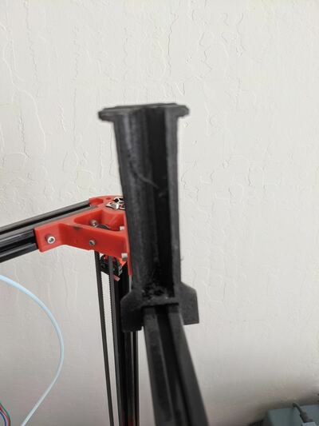Filament Spool
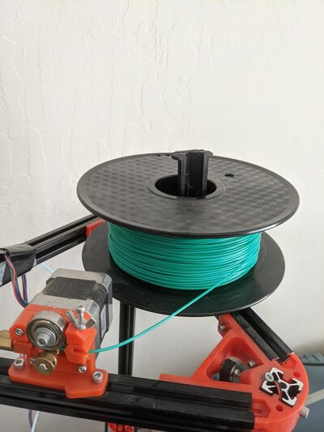ATMEGA2560
- 54 Digital I/O Pins (12-15 can do PWM)
- 16 Analog Input Pins
- 5V, 256KB Flash, 8KB SRAM, 4KB EEPROM
Control Board

Marlin Fireware
- Open-source G-code control software
- Over 150 commands
- Tethered or SDcard operation
G-code
- Computer Numerical Control (CNC) Language
- Appeared 1950! Standardized in 1980 - RS-274
- Single letter codes to control:
- X, Y, Z position/movement
- Filament extrusion
- Extruder and bed temperature
- Rebasing / speed
G-code Example
M107 ; fan off
M190 S60 ; set bed temperature to 60
M104 S200 ; set temperature to 200
G28 ; home all axes
G1 F5000 ; set speed 5000mm/min
G1 X0.000 Y0.000 Z5.000
M109 S200 ; wait for temperature 200
M21 ; set units to millimeters
G90 ; use absolute coordinates
M82 ; use absolute distances for extrusion
G92 E0 ; set zero position (E=extruder)
G1 F9000 ; set speed 9000mm/min
G1 X0.000 Y0.000 Z0.300
G-code Example
G1 X-11.600 Y-9.800 E0.009
G1 X-11.300 Y-9.800 E0.018
G1 X-11.000 Y-9.800 E0.027
G1 X-10.700 Y-9.800 E0.036
G1 X-10.400 Y-9.800 E0.045
G1 X-10.100 Y-9.800 E0.054
G1 X-9.800 Y-9.800 E0.063
G1 X-9.500 Y-9.800 E0.072
G1 X-9.200 Y-9.800 E0.081
G1 X-8.900 Y-9.800 E0.090
G1 X-8.600 Y-9.800 E0.099
G1 X-8.300 Y-9.800 E0.108
G1 X-8.000 Y-9.800 E0.117
G1 X-7.700 Y-9.800 E0.126
G1 X-7.400 Y-9.800 E0.135
Movement & Extrusion
G1 ; Linearly interpolate (E.g. G0 goes straight there)
X0.000 ; X coordinate
Y0.000 ; Y coordinate
Z5.000 ; Z coordinate
E0.3 ; Extrusion position
Describing 3D Models
- Platonic Solids
- Triangle Meshes
- Non-Uniform Rational B-Splines
- Voxels
- Constructive Solid Geometry
Constructive Solid Geometry

https://en.wikipedia.org/wiki/Constructive_solid_geometry#/media/File:Csg_tree.png
: model
gpush
6 mm -7500 um 1500 um - 1 mm translate
4 mm 3 mm 1 mm prism
gpop
gpush
0 7500 um 10 mm - 5 mm translate
5 mm 3500 um cylinder
gpop
difference
;
Units
: um ;
: mm 1000 * ;
: cm 10 mm * ;
: signoformat ( n -- n d ) s>d swap over dabs ;
: n. ( n -- ) signoformat <# #s rot sign #> type ;
: mm. ( n -- ) signoformat
<# # # # [char] . hold #s rot sign #> type ;
Printer Head
- Track position
- Extrusion and flow rate
variable x variable y variable z variable e
variable flow 30 flow !
Signed Distance Fields
- Function mapping position to signed distance from the surface of an object
- For example a sphere: \[ S(x,y,z) = \sqrt{x^2+y^2+z^2} - r \]
Sphere / Cylinder
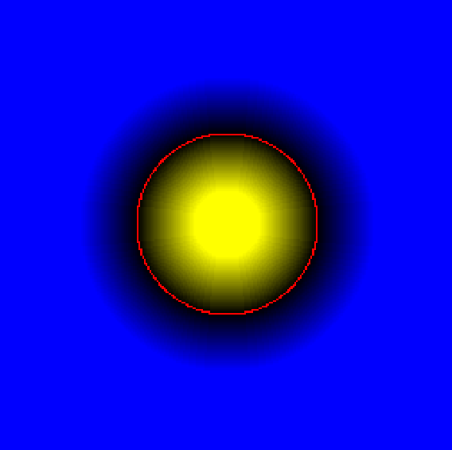
: sphere ( r -- n ) x @ square y @ square + z @ square + sqrt swap - ;
: cylinder ( h r -- n )
x @ square y @ square + sqrt swap - swap z @ abs swap - max ;
Rectangular Prism
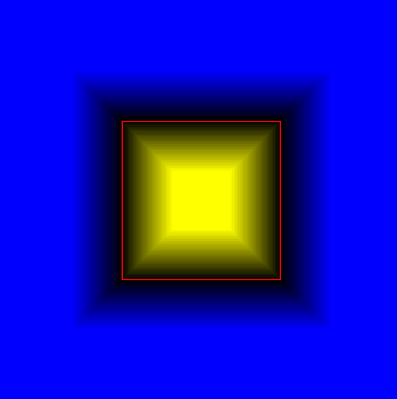
: prism ( x y z -- n )
z @ abs swap - swap y @ abs swap - max swap x @ abs swap - max ;
Union
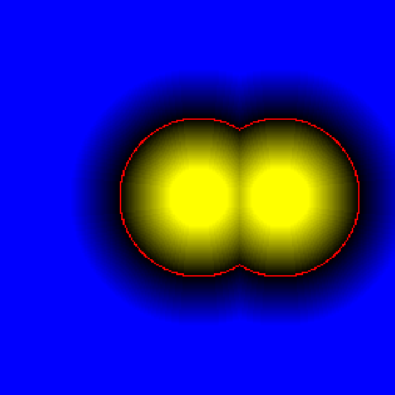
: union ( a b -- n ) min ;
Intersection
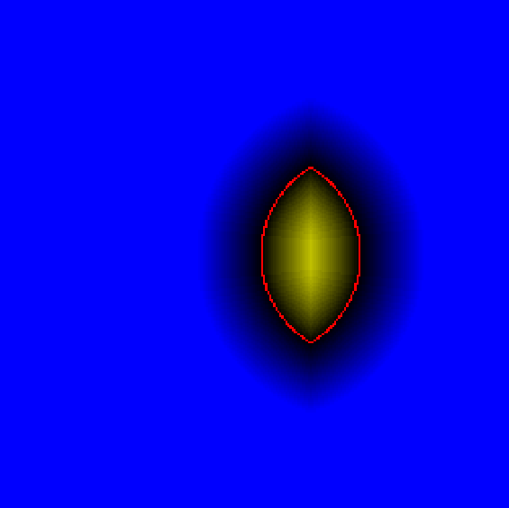
: intersection ( a b -- n ) max ;
Inverse
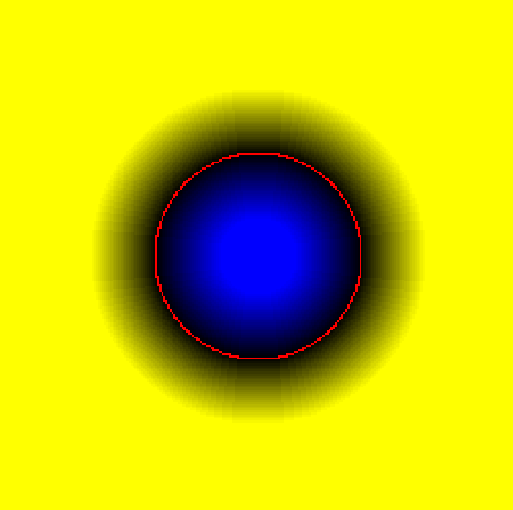
: inverse ( n -- n ) negate ;
Difference
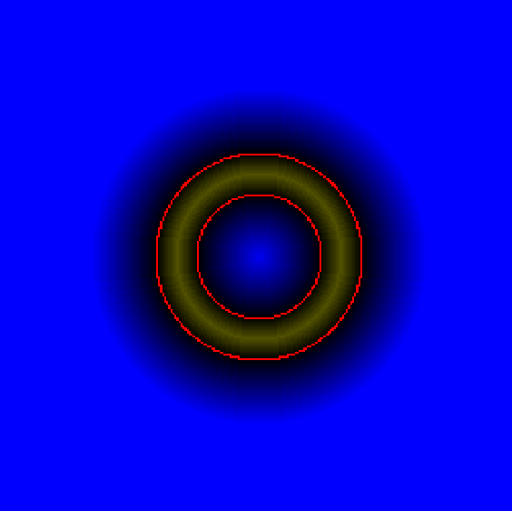
: difference ( a b -- n ) inverse intersection ;
Transforms
: translate ( x y z -- ) z -! y -! x -! ;
: scale ( x y z -- )
z @ swap 1000 */ z !
y @ swap 1000 */ y !
x @ swap 1000 */ x ! ;
: uscale ( s -- ) dup dup scale ;
Geometry Stack
create geostack 300 cells allot
variable geosp geostack geosp !
: gunipush geosp @ ! cell geosp +! ;
: gunipop cell geosp -! geosp @ @ ;
: gpush x @ gunipush y @ gunipush z @ gunipush ;
: gpop gunipop z ! gunipop y ! gunipop x ! ;
Complex Shapes

Filling Each Layer
- Flood fill each layer
- Alternate horizontal / vertical bias
- Represent x,y as a x+y*slicelength single value
- Emit G-code as you go
Floodfill Stack
create floodstack slicelength 100 * cells allot
variable floodsp floodstack floodsp !
: flooddepth floodsp @ floodstack - cell / ;
: unflooded floodsp @ floodstack <> ;
: floodpush floodsp @ ! cell floodsp +! ;
: floodpop cell floodsp -! floodsp @ @ ;

https://en.wikipedia.org/wiki/Flood_fill#/media/File:Smiley_fill.gif
Floodfill
variable floodorder
: toggleorder floodorder @ invert floodorder ! ;
: horiflood ( pos -- pos )
dup 1- floodpush
dup 1+ floodpush
dup slicelength - floodpush
dup slicelength + floodpush ;
: vertiflood ( pos -- pos )
dup slicelength - floodpush
dup slicelength + floodpush
dup 1- floodpush
dup 1+ floodpush ;
Floodfill
: flooddrain
begin unflooded while
floodpop
dup c@ if
0 over c!
floodorder @ if horiflood else vertiflood then
pointify
2dup dist 500 um > if 9000 speed moveto
600 speed else lineto then
else drop then
repeat
;
Broken Microwave
- Plastic holding spring and latch broke
- Replace the broken piece with a 3D Printed insert
- Iterative design with Forth was faster
 https://www.youtube.com/watch?v=D0VizKQg6pw
https://www.youtube.com/watch?v=D0VizKQg6pw
3 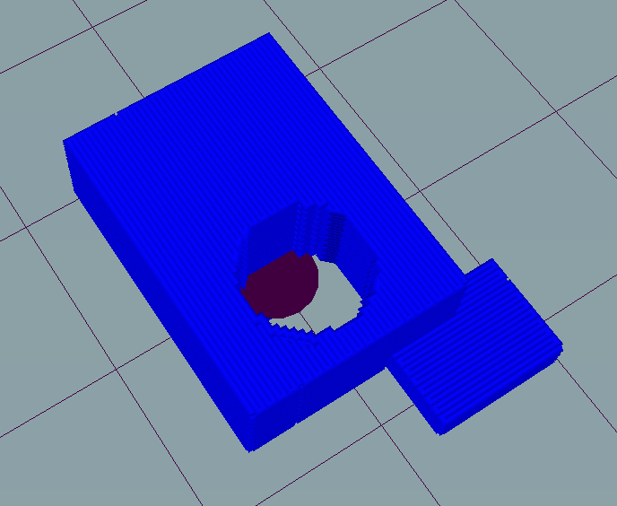 4 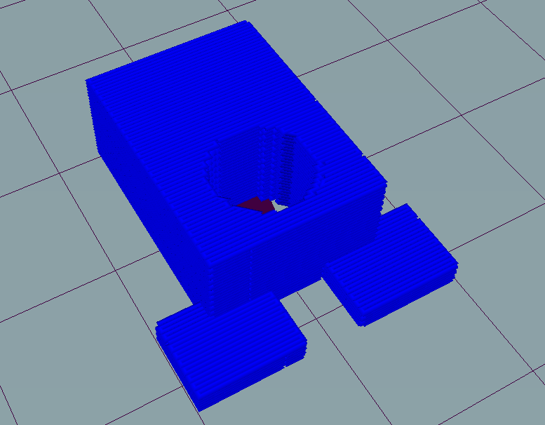